В данном уроке рассматривается умножение и деление рациональных чисел.
Умножение рациональных чисел
Правила умножения целых чисел справедливы и для рациональных чисел. Иными словами, чтобы умножать рациональные числа, нужно уметь умножать целые числа.
Необходимо также знать основные законы умножения такие как переместительный закон умножения, сочетательный закон умножения, распределительный закон умножения и закон умножения на ноль.
Пример 1. Найти значение выражения
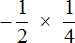
Это умножение рациональных чисел с разными знаками. Чтобы перемножить рациональные числа с разными знаками, нужно перемножить их модули и перед полученным ответом поставить минус.
Чтобы хорошо увидеть, что мы имеем дело с числами, у которых разные знаки, заключим каждое рациональное число в скобки вместе со своими знаками
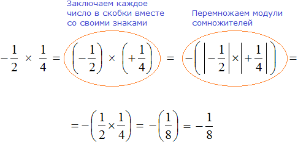
Модуль числа  равен
равен  , а модуль числа
, а модуль числа  равен
равен  . Перемножив полученные модули, как положительные дроби, мы получили ответ
. Перемножив полученные модули, как положительные дроби, мы получили ответ  , но перед ответом поставили минус, как от нас требовало правило. Чтобы обеспечить перед ответом этот минус, умножение модулей выполнялось в скобках, перед которыми и поставлен минус.
, но перед ответом поставили минус, как от нас требовало правило. Чтобы обеспечить перед ответом этот минус, умножение модулей выполнялось в скобках, перед которыми и поставлен минус.
Таким образом, значение выражения равно
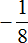
Короткое решение выглядит следующим образом:
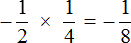
Пример 2. Найти значение выражения
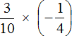
Это умножение рациональных чисел с разными знаками. Перемножим модули этих чисел и перед полученным ответом поставим минус:
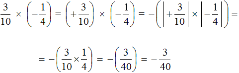
Решение для данного примера можно записать покороче:
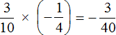
Пример 3. Найти значение выражения
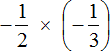
Это умножение отрицательных рациональных чисел. Чтобы перемножить отрицательные рациональные числа, нужно перемножить их модули и перед полученным ответом поставить плюс
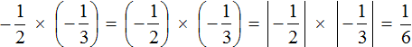
Решение для данного примера можно записать покороче:
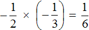
Пример 4. Найти значение выражения
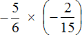
Это умножение отрицательных рациональных чисел. Перемножим модули этих чисел и перед полученным ответом поставим плюс
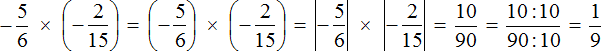
Решение для данного примера можно записать покороче:
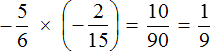
Пример 5. Найти значение выражения
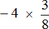
Это умножение рациональных чисел с разными знаками. Перемножим модули этих чисел и перед полученным ответом поставим минус
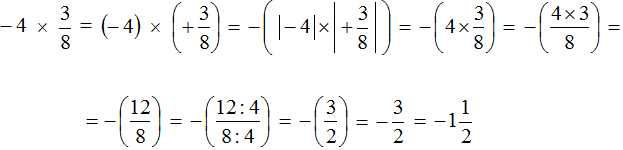
Короткое решение будет выглядеть значительно проще:
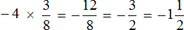
Пример 6. Найти значение выражения
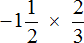
Переведём смешанное число
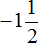
в неправильную дробь. Остальное перепишем, как есть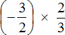
Получили умножение рациональных чисел с разными знаками. Перемножим модули этих чисел и перед полученным ответом поставим минус. Запись с модулями можно пропустить, чтобы не загромождать выражение
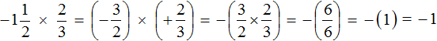
Решение для данного примера можно записать покороче
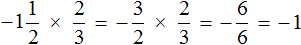
Пример 7. Найти значение выражения
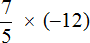
Это умножение рациональных чисел с разными знаками. Перемножим модули этих чисел и перед полученным ответом поставим минус
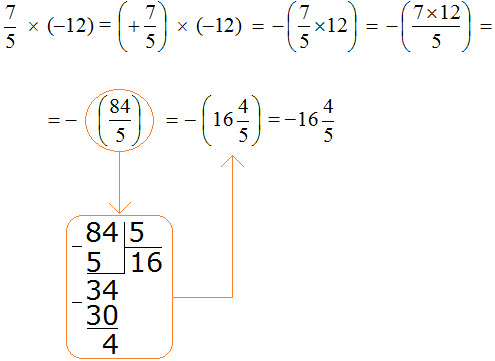
Сначала в ответе получилась неправильная дробь
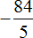
, но мы выделили в ней цéлую часть. Обратите внимание, что целая часть была выделена от модуля дроби . Получившееся смешанное число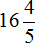
было заключено в скобки, перед которыми поставлен минус. Это сделано для того, чтобы выполнялось требование правила. А правило требовало, чтобы перед полученным ответом стоял минус.Решение для данного примера можно записать покороче:
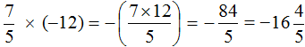
Пример 8. Найти значение выражения
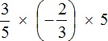
Выражение состоит из нескольких сомножителей. Согласно сочетательному закону умножения, если выражение состоит из нескольких сомножителей, то произведение не будет зависеть от порядка действий. Это позволяет нам вычислить данное выражение в любом порядке.
Сначала перемножим  и
и  и полученное число перемножим с оставшимся числом 5. Запись с модулями пропустим, чтобы не загромождать выражение.
и полученное число перемножим с оставшимся числом 5. Запись с модулями пропустим, чтобы не загромождать выражение.
Первое действие:
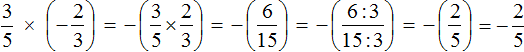
Второе действие:
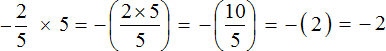
Ответ: значение выражения равно −2.
Пример 9. Найти значение выражения:
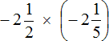
Переведём смешанные числа в неправильные дроби:
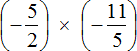
Получили умножение отрицательных рациональных чисел. Перемножим модули этих чисел и перед полученным ответом поставим плюс. Запись с модулями можно пропустить, чтобы не загромождать выражение
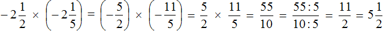
Пример 10. Найти значение выражения
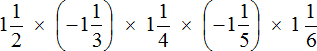
Выражение состоит из нескольких сомножителей. Согласно сочетательному закону умножения, если выражение состоит из нескольких сомножителей, то произведение не будет зависеть от порядка действий. Это позволяет нам вычислить данное выражение в любом порядке.
Не будем изобретать велосипед, а вычислим данное выражение слева направо в порядке следования сомножителей. Запись с модулями пропустим, чтобы не загромождать выражение
Первое действие:
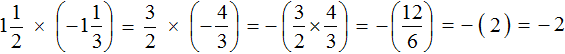
Второе действие:
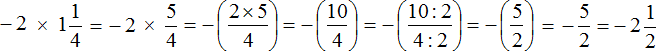
Третье действие:
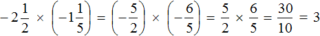
Четвёртое действие:
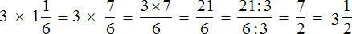
Ответ: значение выражения равно
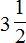
Пример 11. Найти значение выражения
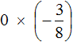
Вспоминаем закон умножения на ноль. Этот закон гласит, что произведение равно нулю, если хотя бы один из сомножителей равен нулю.
В нашем примере один из сомножителей равен нулю, поэтому не теряя времени отвечаем, что значение выражения равно нулю:
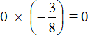
Пример 12. Найти значение выражения
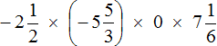
Произведение равно нулю, если хотя бы один из сомножителей равен нулю.
В нашем примере один из сомножителей равен нулю, поэтому не теряя времени отвечаем, что значение выражения равно нулю:
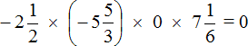
Пример 13. Найти значение выражения
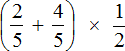
Можно воспользоваться порядком действий и сначала вычислить выражение в скобках
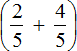
и полученный ответ перемножить с дробьюЕщё можно воспользоваться распределительным законом умножения — умножить каждое слагаемое суммы на дробь  и полученные результаты сложить. Этим способом и воспользуемся.
и полученные результаты сложить. Этим способом и воспользуемся.
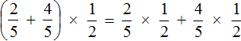
Согласно порядку действий, если в выражении присутствует сложение и умножение, то в первую очередь нужно выполнять умножение. Поэтому в получившемся новом выражении возьмём в скобки те дроби, которые должны быть перемножены. Так мы хорошо увидим, какие действия выполнить раньше, а какие позже:
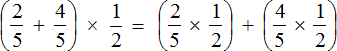
Далее вычисляем выражение по действиям. Сначала вычислим выражения в скобках, и полученные результаты сложим
Первое действие:
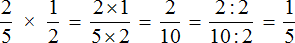
Второе действие:
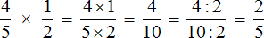
Третье действие:
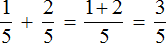
Ответ: значение выражения равно 
Решение для данного примера можно записать значительно короче. Выглядеть оно будет следующим образом:
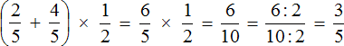
Видно, что данный пример можно было решить даже в уме. Поэтому следует развивать в себе навык анализа выражения до начала его решения. Вполне вероятно, что его можно решить в уме и сэкономить много времени и нервов. А на контрольных и экзаменах, как известно время очень дорого стоит.
Пример 14. Найти значение выражения −4,2 × 3,2
Это умножение рациональных чисел с разными знаками. Перемножим модули этих чисел и перед полученным ответом поставим минус
Обратите внимание, как перемножались модули рациональных чисел. В данном случае, чтобы перемножить модули рациональных чисел, потребовалось суметь перемножить десятичные дроби.
Пример 15. Найти значение выражения −0,15 × 4
Это умножение рациональных чисел с разными знаками. Перемножим модули этих чисел и перед полученным ответом поставим минус
Обратите внимание, как перемножались модули рациональных чисел. В данном случае, чтобы перемножить модули рациональных чисел, потребовалось суметь перемножить десятичную дробь и целое число.
Пример 16. Найти значение выражения −4,2 × (−7,5)
Это умножение отрицательных рациональных чисел. Перемножим модули этих чисел и перед полученным ответом поставим плюс
Деление рациональных чисел
Деление рациональных чисел свóдится к умножению этих же чисел. Для этого первую дробь умножают на дробь, обратную второй. Затем применяются правила умножения рациональных чисел.
Пример 1. Выполнить деление:
Умнóжим первую дробь на дробь, обратную второй. Обратная для второй дроби это дробь . На неё и умножим первую дробь:
Получили умножение рациональных чисел с разными знаками. А как вычислять такие выражения мы уже знаем. Для этого нужно перемножить модули данных рациональных чисел и перед полученным ответом поставить минус.
Дорешаем данный пример до конца. Запись с модулями можно пропустить, чтобы не загромождать выражение
Таким образом, значение выражения равно 
Подробное решение выглядит следующим образом:
Короткое решение можно записать так:
Пример 2. Выполнить деление
Умнóжим первую дробь на дробь, обратную второй. Обратная для второй дроби это дробь . На неё и умножим первую дробь:
Короткое решение можно записать так:
Пример 3. Выполнить деление
Умнóжим первую дробь на дробь, обратную второй. Обратная для второй дроби это дробь
Получили умножение отрицательных рациональных чисел. Выполним данное умножение. Запись с модулями можно пропустить, чтобы не загромождать выражение:
Пример 4. Выполнить деление
В данном случае нужно первое число −3 умножить на дробь, обратную дроби .
Обратная для дроби это дробь  . Затем следует применить правило умножения рациональных чисел с разными знаками:
. Затем следует применить правило умножения рациональных чисел с разными знаками:
Пример 5. Выполнить деление
Умнóжим первую дробь на число, обратное числу 4.
Обратное числу 4 это дробь  . На неё и умножим первую дробь
. На неё и умножим первую дробь
Пример 6. Выполнить деление
Умнóжим первую дробь на число, обратное числу −3
Обратное числу −3 это дробь 
Пример 7. Найти значение выражение −14,4 : 1,8
Это деление рациональных чисел с разными знаками. Чтобы вычислить данное выражение, нужно модуль делимого разделить на модуль делителя и перед полученным ответом поставить минус
Обратите внимание, как модуль делимого был разделён на модуль делителя. В данном случае потребовалось суметь разделить десятичную дробь на другую десятичную дробь.
Если нет желания работать с десятичными дробями (а это бывает часто), то эти десятичные дроби можно перевести в смешанные числа, затем перевести эти смешанные числа в неправильные дроби, а затем заняться непосредственно делением.
Вычислим предыдущее выражение −14,4 : 1,8 этим способом. Переведём десятичные дроби в смешанные числа:
Теперь переведём полученные смешанные числа в неправильные дроби:
Теперь можно заняться непосредственно делением, а именно разделить дробь на дробь . Для этого нужно первую дробь умножить на дробь, обратную второй:
Пример 8. Найти значение выражения
Переведём десятичную дробь −2,06 в неправильную дробь, и умножим эту дробь на дробь, обратную второй:0
Пример 9. Найти значение выражения −7,2 : (−0,6)
Перенесём в обеих дробях запятую на одну цифру вправо, получим деление −72 : (−6)
−72 : (−6) = 12
Многоэтажные дроби
Часто можно встретить выражение, в котором деление дробей записано с помощью дробной черты. Например, выражение может быть записано следующим образом:
В чём же разница между выражениями и ? На самом деле разницы никакой. Эти два выражения несут одно и то же значение и между ними можно поставить знак равенства:
В первом случае знак деления представляет собой двоеточие и выражение записано в одну строку. Во втором случае деление дробей записано с помощью дробной черты. В результате получается дробь, которую в народе договорились называть многоэтажной.
При встрече с такими многоэтажными выражениями, нужно применять те же правила деления обыкновенных дробей. Первую дробь необходимо умножать на дробь, обратную второй.
Использовать в решении подобные дроби крайне неудобно, поэтому можно записать их в понятном виде, используя в качестве знака деления не дробную черту, а двоеточие.
Например, запишем многоэтажную дробь в понятном виде. Для этого сначала нужно разобраться, где первая дробь и где вторая, потому что сделать это правильно удаётся не всегда. В многоэтажных дробях имеется несколько дробных черт, которые могут запутать. Главная дробная черта, которая отделяет первую дробь от второй, обычно бывает длиннее остальных.
После определения главной дробной черты можно без труда понять, где первая дробь и где вторая:
И далее можно воспользоваться методом деления дробей — умножить первую дробь на дробь, обратную второй.
Пример 2. Запишем в понятном виде многоэтажную дробь
Находим главную дробную черту (она самая длинная) и видим, что осуществляется деление целого числа −3 на обыкновенную дробь
А если бы мы по ошибке приняли вторую дробную черту за главную (ту, что короче), то получилось бы, что мы делим дробь на целое число 5В этом случае, даже если это выражение вычислить верно, задача будет решена неправильно, поскольку делимым в данном случае является число −3, а делителем — дробь .
Пример 3. Запишем в понятном виде многоэтажную дробь
Находим главную дробную черту (она самая длинная) и видим, что осуществляется деление дроби на целое число 2
А если бы мы по ошибке приняли первую дробную черту за главную (ту, что короче), то получилось бы, что мы делим целое число −5 на дробь  В этом случае, даже если это выражение вычислить верно, задача будет решена неправильно, поскольку делимым в данном случае является дробь , а делителем — целое число 2.
В этом случае, даже если это выражение вычислить верно, задача будет решена неправильно, поскольку делимым в данном случае является дробь , а делителем — целое число 2.
Несмотря на то, что многоэтажные дроби неудобны в работе, сталкиваться мы с ними будем очень часто, особенно при изучении высшей математики.
Естественно, на перевод многоэтажной дроби в понятный вид уходит дополнительное время и место. Поэтому можно воспользоваться более быстрым методом. Данный метод удобен и на выходе позволяет получить готовое выражение, в котором первая дробь уже умножена на дробь, обратную второй.
Реализуется этот метод следующим образом:
Если дробь четырехэтажная, например как , то цифру находящуюся на первом этаже поднимают на самый верхний этаж. А цифру, находящуюся на втором этаже поднимают на третий этаж. Полученные цифры нужно соединить значками умножения ( × )
В результате, минуя промежуточную запись мы получаем новое выражение , в котором первая дробь уже умножена на дробь, обратную второй. Удобство да и только!
Чтобы не допускать ошибок при использовании данного метода, можно руководствоваться следующим правилом:
С первого на четвёртый. Со второго на третий.
В правиле речь идет об этажах. Цифру с первого этажа нужно поднимать на четвертый этаж. А цифру со второго этажа нужно поднимать на третий этаж.
Попробуем вычислить многоэтажную дробь пользуясь вышеприведённым правилом.
Итак, цифру находящуюся на первом этаже поднимаем на четвёртый этаж, а цифру находящуюся на втором этаже поднимаем на третий этаж
В результате, минуя промежуточную запись мы получаем новое выражение , в котором первая дробь уже умножена на дробь, обратной второй. Далее можно воспользоваться имеющимися знаниями:

Попробуем вычислить многоэтажную дробь пользуясь новой схемой.
Здесь имеется только первый, второй и четвёртый этажи. Третий этаж отсутствует. Но мы не отходим от основной схемы: цифру с первого этажа поднимаем на четвёртый этаж. А поскольку третий этаж отсутствует, то цифру находящуюся на втором этаже оставляем, как есть
В результате, минуя промежуточную запись мы получили новое выражение , в котором первое число −3 уже умножено на дробь, обратную второй. Далее можно воспользоваться имеющимися знаниями:

Попробуем вычислить многоэтажную дробь , пользуясь новой схемой.
Здесь имеется только второй, третий и четвёртый этажи. Первый этаж отсутствует. Поскольку первый этаж отсутствует, подниматься на четвёртый этаж нечему, но зато мы можем поднять цифру со второго этажа на третий:
В результате, минуя промежуточную запись мы получили новое выражение , в котором первая дробь уже умножена на число, обратное делителю. Далее можно воспользоваться имеющимися знаниями:
Использование переменных
Если выражение сложное и вам кажется, что оно запутает вас в процессе решения задачи, то часть выражения можно занести в переменную и далее работать с этой переменной.
Математики часто так и делают. Сложную задачу разбивают на более лёгкие подзадачи и решают их. Затем собирают решённые подзадачи в одно единое целое. Это творческий процесс и этому учатся годами, упорно тренируясь.
Использование переменных оправдано, при работе с многоэтажными дробями. Например:
Найти значение выражения
Итак, имеется дробное выражение в числителе и в знаменателе котором дробные выражения. Другими словами, перед нами снова многоэтажная дробь, которую мы так не любим.
Выражение, находящееся в числителе можно занести в переменную с любым названием, например:
Но в математике в подобном случае переменным принято давать название из больших латинских букв. Давайте не будем нарушать эту традицию, и обозначим первое выражение через большую латинскую букву A
А выражение, находящееся в знаменателе можно обозначить через большую латинскую букву B
Теперь наше изначальное выражение принимает вид . То есть мы сделали замену числового выражения на буквенное, предварительно занеся числитель и знаменатель в переменные A и B.
Теперь мы можем отдельно вычислить значения переменной A и значение переменной B. Готовые значения мы вставим в выражение .
Найдём значение переменной A
Найдём значение переменной B
Теперь подставим в главное выражения вместо переменных A и B их значения:
Мы получили многоэтажную дробь в которой можно воспользоваться схемой «с первого на четвёртый, со второго на третий», то есть цифру находящуюся на первом этаже поднять на четвёртый этаж, а цифру находящуюся на втором этаже поднять на третий этаж. Дальнейшее вычисление не составит особого труда:
Таким образом, значение выражения равно −1.
Конечно, мы рассмотрели простейший пример, но нашей целью было узнать, как можно использовать переменные для облегчения себе задачи, чтобы свести к минимуму допущение ошибок.
Отметим также, что решение для данного примера можно записать не применяя переменные. Выглядеть оно будет как
Это решение более быстрое и короткое и в данном случае его целесообразнее так и записать, но если выражение окажется сложным, состоящим из нескольких параметров, скобок, корней и степеней, то желательно вычислять его в несколько этапов, занося часть его выражений в переменные.